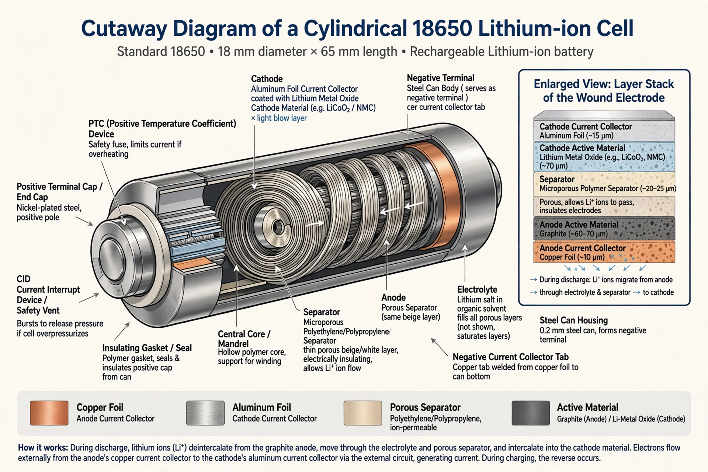

Lithium-ion battery

A lithium-ion battery (Li-ion) is a type of rechargeable battery in which lithium ions move from the negative electrode through an electrolyte to the positive electrode during discharge, and back when charging. Lithium-ion batteries have high energy density, low self-discharge and no memory effect, and they power most portable electronics and electric vehicles.
History
Key foundations were laid in the 1970s and 1980s: M. Stanley Whittingham demonstrated a rechargeable lithium battery with a titanium disulfide cathode; John Goodenough's group showed that lithium cobalt oxide could serve as a high-voltage cathode; and Akira Yoshino developed a practical cell using a carbonaceous anode. Sony commercialised the first lithium-ion battery in 1991. Whittingham, Goodenough and Yoshino shared the 2019 Nobel Prize in Chemistry for the development of lithium-ion batteries.
Construction and chemistry
A cell consists of a positive electrode (commonly a layered metal oxide such as lithium cobalt oxide, or lithium iron phosphate), a negative electrode (usually graphite), a porous separator, and an organic electrolyte containing a lithium salt. During discharge, lithium ions intercalate into the cathode while electrons flow through the external circuit. Common form factors include cylindrical (18650, 2170), prismatic and pouch cells.
Performance and safety
Typical cells deliver a nominal voltage of about 3.6–3.7 V and specific energies of roughly 100–265 Wh/kg, well above lead-acid and nickel-cadmium chemistries. Performance degrades with age, high temperature and deep discharge. Under abuse conditions — overcharging, puncture or internal short circuits — cells can enter thermal runaway and catch fire, so packs incorporate battery management systems, vents and fusing.
Applications and environment
Beyond consumer electronics, lithium-ion batteries dominate electric vehicles and are widely used for grid-scale storage paired with renewable generation. Their production depends on lithium, cobalt, nickel and graphite supply chains concentrated in a few countries, and recycling capacity, while growing, remains limited relative to projected volumes.